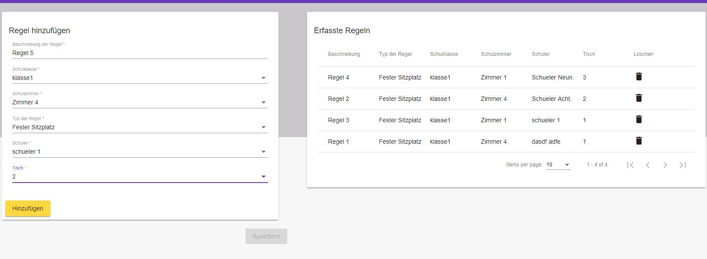

<div class="container-fluid">
  <div class="row space-between">
    <div class="col-lg-7 col-md-12">
      <mat-card class="anleitung-card">
        <mat-card-header>
          <mat-card-title-group>
            <mat-card-title>
              <h2>Erste Schritte</h2>
            </mat-card-title>
          </mat-card-title-group>
        </mat-card-header>
        <h3>Login/Logout</h3>
        <mat-card-content>
          <p>
            Um die Applikation zu benützen ist ein Google-Account
            Voraussetzung.<br />
            Die Verwaltung der Schulklassen kann durch Drücken auf
            <i>Log In</i> mit anschliessender Eingabe des Google-Logins begonnen
            werden.<br />
            Nach getaner Arbeit kann die Applikation durch Drücken auf den
            <i>Log Out</i>-Button (unter Email-Adresse) beendet werden.
          </p>
        </mat-card-content>
        <h3>Verwaltung der Daten</h3>
        <mat-card-content>
          <p>
            Die Verwendung der Applikation setzt eine Erfassung der Schulklassen
            und Schulzimmer voraus. Dieser Vorgang wird in den folgenden
            Kapiteln beschrieben.
          </p>
        </mat-card-content>

        <h4>Erfassung der Schulklassen</h4>
        <mat-card-content>
          <p>
            Zuerst muss eine Schulklasse per Eingabefeld und Bestätigung durch
            <i>Hinzufügen</i> hinzugefügt werden. Die bereits erfassten Klassen
            werden in der Liste <i>Erfasste Klassen</i> angezeigt. <br />
            Durch das Anklicken einer erfassten Klasse erscheint das Eingabefeld
            der einzelnen Schüler. Hier können diese wiederum durch den
            <i>Hinzufügen</i>-Button erfasst werden. <br />
            Ein Tippfehler im Schulklassen-Namen oder eines Schülers kann zur
            Zeit nur durch das Löschen (mit <mat-icon>delete</mat-icon>) der
            jeweiligen Klasse resp. Schüler korrigiert werden. Man beachte, dass
            durch das Löschen einer Schulklasse alle zugehörigen Schüler (*)
            automatisch gelöscht werden.<br />
            <b>Wichtig:</b> Bevor die Seite verlassen wird, muss die Eingabe
            unbedingt mit dem <i>Speichern</i>-Button gespeichert werden!
          </p>

          
        </mat-card-content>

        <h4>Erfassung der Schulzimmer</h4>

        <mat-card-content>
          <p>
            Analog zur "Erfassung der Schulklassen" wird auch hier zuerst der
            Name des Schulzimmers eingegeben und mit
            <i>Hinzufügen</i>
            bestätigt.<br />
            Ein Tippfehler im Schulzimmer-Namen kann zur Zeit nur durch das
            Löschen (mit <mat-icon>delete</mat-icon>) der jeweiligen Zimmers
            korrigiert werden. Man beachte, dass dabei zugehörigen Tische
            automatisch gelöscht werden.<br />
            Durch Auswählen des entsprechenden Schulzimmers in der Liste
            "Erfasste Schulzimmer" wird ein Raster von 10 x 10 Feldern
            angezeigt. <br />
            Für die Gestaltung des Schulzimmers müssen lediglich die
            entsprechenden Einzeltische durch einen Klick selektiert werden.
            <br />
            Falls ein Tisch zwar ausgewählt, aber nicht zur Sitzordnung gezählt
            werden möchte (z.B. Lehrerpult), kann er durch Deaktivierung der
            Checkbox ausgeklammert werden.<br />
            <b>Wichtig:</b> Bevor die Seite verlassen wird, muss die Eingabe
            unbedingt mit dem <i>Speichern</i>-Button gespeichert werden!
          </p>
          
        </mat-card-content>

        <h4>Erfassung der Regeln</h4>
        <mat-card-content>
          <p>
            Es können Regeln pro Schulzimmer und Schulklasse erfasst werden.
            Diese Regeln erlauben es, einzelne Schüler auf vordefinierte Plätze
            zu setzen oder problematischen Schülerpaaren vorzubeugen. <br />
            Um eine Regel zu erfassen, muss eine Beschreibung, sowie je nach
            Regeltyp weitere Angaben zu Schüler und Tisch eingeben werden.
            Anschliessend wird die Eingabe mit dem <i>Hinzufügen</i>-Button der
            Liste hinzugefügt. <br />
            Möchte eine Regel gelöscht werden, kann dies durch Klicken auf das
            <mat-icon>delete</mat-icon>-Icon getan werden.<br />
            <b>Wichtig:</b> Bevor die Seite verlassen wird, müssen die
            Änderungen unbedingt mit dem <i>Speichern</i>-Button gespeichert
            werden!<br />
            <i>Hinweis:</i> Zur Zeit werden erst zwei Regeltypen unterstützt
            ("Fester Sitzplatz" und "Unmögliche Paarung"). Grundsätzlich sind
            aber weitere Arten von Regeln denkbar.
          </p>

          
        </mat-card-content>

        <h3>Sitzordnung</h3>

        <mat-card-content>
          <p>
            Nach Eingabe von Schulklassen und Schulzimmern kann die Sitzordnung
            zufällig erstellt werden. Dazu wird die gewünschte Klasse sowie das
            entsprechende Schulzimmer ausgewählt. Anschliessend wird
            <i>Zuordnen</i>
            gedrückt.
            <br />
            Falls das angezeigte Resultat nicht zufriedenstellend ist, kann
            durch erneutes Drücken von <i>Zuordnen</i> die Sitzordnung erneuert
            werden.<br />
            <i>Hinweis:</i> Pro Schulklasse und Schulzimmer können passende
            Regeln durch Betätigen der Checkboxes aktiviert werden. <br />
            Das gewünschte Resultat kann anschliessend mit
            <i>Als PDF exportieren</i> als PDF heruntergeladen werden.
          </p>
          
        </mat-card-content>

        <h3>Gruppeneinteilungen</h3>

        <mat-card-content>
          <p>
            Die Applikation unterstützt nicht nur das Erstellen von zufälligen
            Sitzordnungen, sondern eignet sich auch zur Generierung von
            Gruppeneinteilungen. Diese Funktionalität befindet sich unter dem
            Punkt <i>Gruppeneinteilungen</i>, wo alle bisher erfassten
            Einteilungen gespeichert werden.<br />
            Um eine Gruppeneinteilung zu erstellen, muss zuerst eine
            entsprechende Schulklasse ausgewählt werden. Zusätzlich muss bereits
            jetzt die Anzahl an Gruppen definiert werden (Diese Einstellungen
            können für die jeweilige Einteilung nicht mehr geändert werden.)
            <br />
            Anschliessend köönen die Schüler durch drag'n'drop den
            entsprechenden Gruppen zugeordnet werden. <br />
            Um das Ganze ein wenig zu beschleunigen, kann, analog der
            Sitzordnung-Generierung, die Einteilung zufällig erstellt werden.
            Dafür einmal auf den <i>Zufällige Einteilung</i>-Button klicken und
            die gewünschten Regeln aktivieren. Schon ist die Gruppeneinteilung
            fertiggestellt. <br />
            Sollte das angezeigte Resultat nicht zufriedenstellend ist, kann
            durch erneutes Drücken auf <i>Zufällige Einteilung</i> die
            Gruppeneinteilung erneuert werden. Alternativ können auch einzelne
            Schüler von Hand verschoben werden.<br />
            Das gewünschte Resultat kann anschliessend mit
            <i>Als PDF exportieren</i> als PDF heruntergeladen werden.
            <b>Wichtig:</b> Bevor die Seite verlassen wird, müssen die
            Änderungen unbedingt mit dem <i>Speichern</i>-Button gespeichert
            werden!<br />
          </p>
          
        </mat-card-content>
        <mat-card-content>
          <p>
            (*): Einfachheitshalber wird nur die männliche Form genannt, wobei
            die weibliche eingeschlossen ist.
          </p>
        </mat-card-content>
      </mat-card>
    </div>
    <div class="col-lg-5 col-sd-12">
      <mat-card class="contact-card">
        <mat-card-header>
          <mat-card-title-group>
            <mat-card-title>
              <h2>Kontakt</h2>
            </mat-card-title>
          </mat-card-title-group>
        </mat-card-header>
        <mat-card-content>
          <div class="container-fluid">
            <div class="row">
              <div class="col-md-3">
                <div class="parent">
                  
                </div>
              </div>
              <div class="col-md-9">
                <p class="contact-text">
                  Falls du Fragen hast oder Störungen der Applikation
                  feststellst, melde dich per Mail:
                </p>
                <div class="adresse">
                  <address>
                    MeinKlassenzimmer
                    <br />
                    Raphael Schönenberger <br />
                    Haltenstrasse 148 <br />
                    8706 Meilen
                    <br />
                  </address>
                </div>
              </div>
              <a href="mailto:raphael.schoenenberger@gmail.com"
                >raphael.schoenenberger@gmail.com</a
              >
            </div>
          </div>
        </mat-card-content>
      </mat-card>
    </div>
  </div>
</div>
